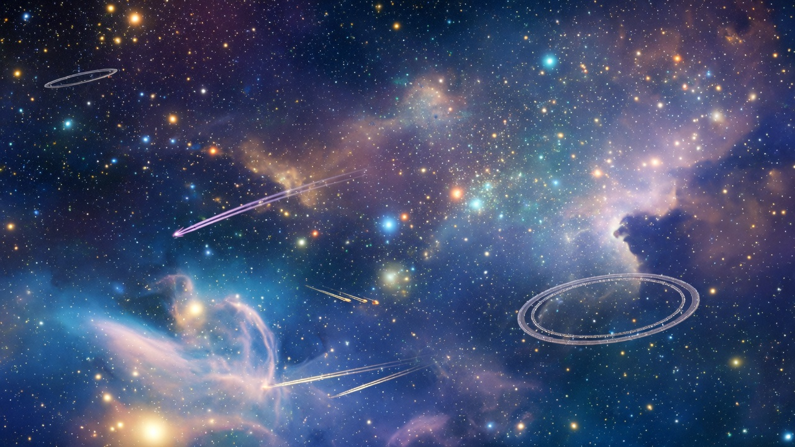
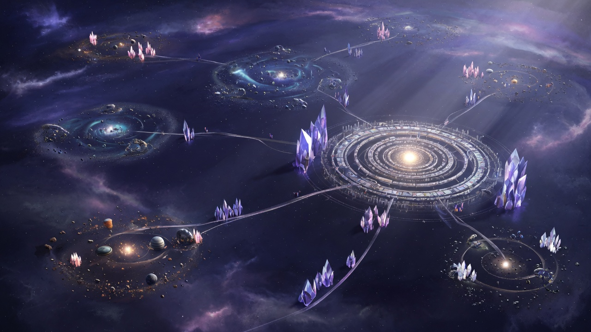
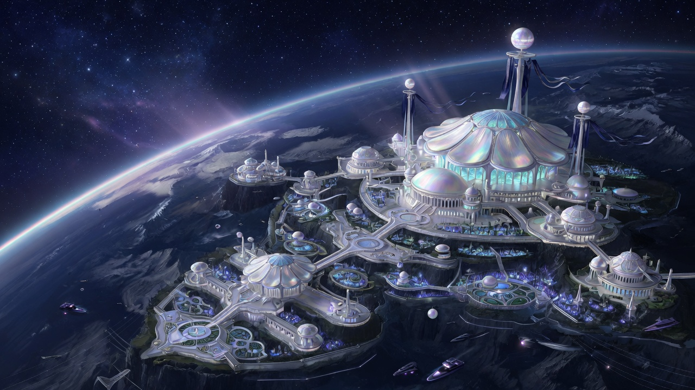
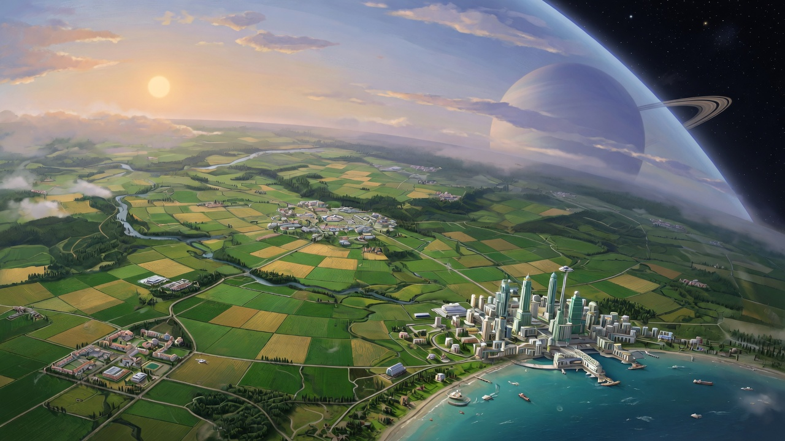
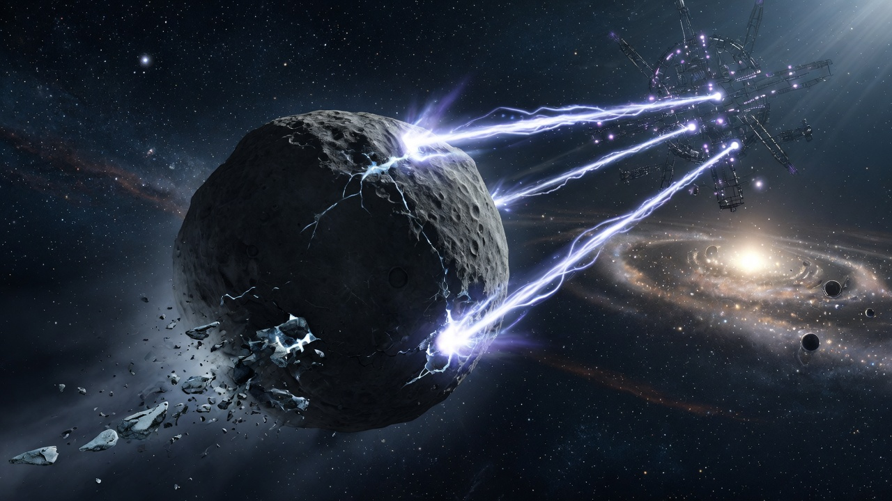
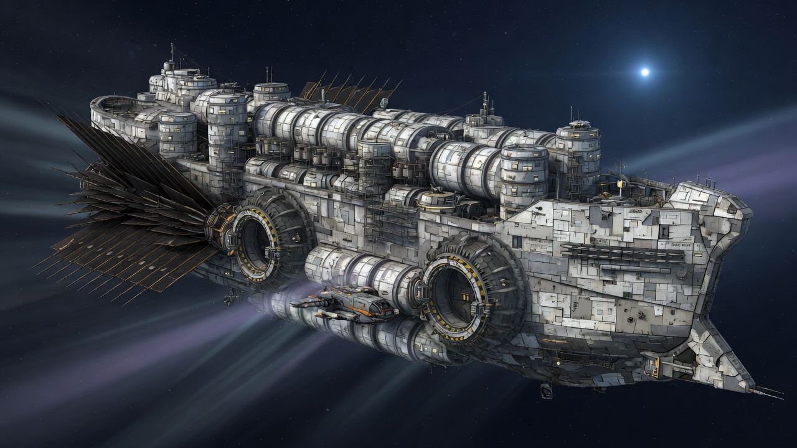
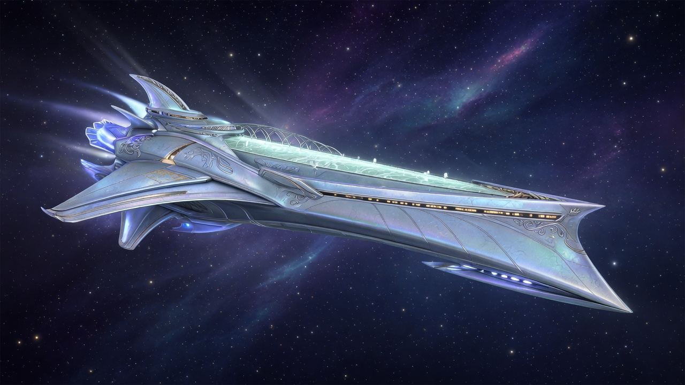
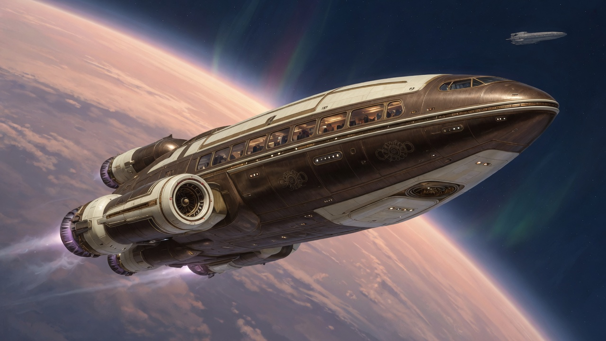
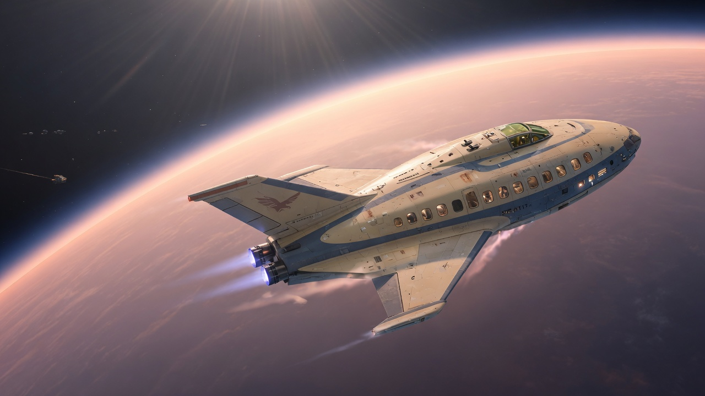
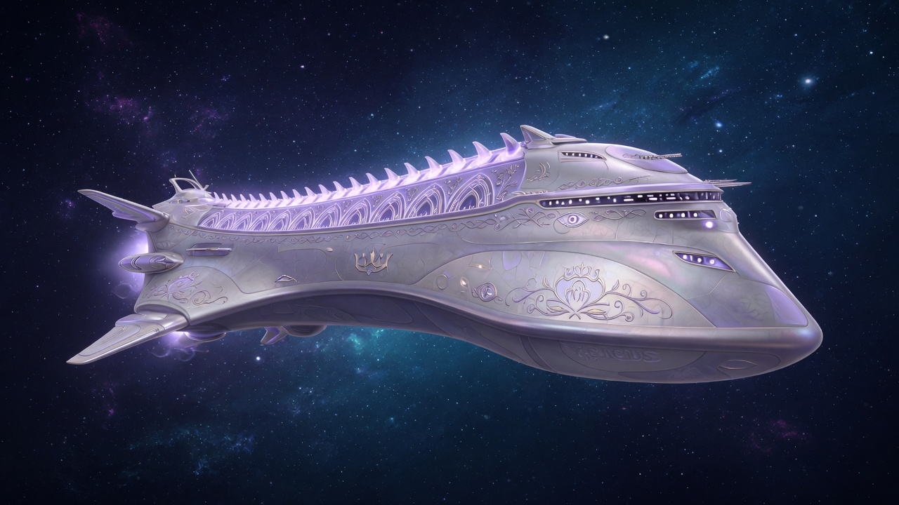

Locations
Systems, worlds, and ships of the far-future Centauri Cluster — from Crown Dominion capitals and agricultural worlds to the gas giant Dolod, the arkship Diligent, and the Traveler and archon hulls that carry the plot between them.
Worlds & systems
-

Centauri ClusterThe dense star field that is the whole stage
-

Crown Dominion systemsThe multi-star territory the Imperial Accord shares in rotation
-
 Kelowan
Kelowan
The capital system; where HeSea wealth is administered and the fleets mass
-

WynidHelena-Chione’s royal seat; the trials and the coup
-

GondiarThe human client world: Santa Rosa, the Jalgori-Tobus, the lockdown
-
 Hafnir
Hafnir
Finn’s domain, offered to the Diligent’s settlers
-
 Anoosha
Anoosha
Where the Camurdy Mountains throw Finn together with the arkship crew
-
 Dolod
Dolod
The iron exotic gas giant steered by an ancient Archimedes Engine
-

BoksrockThe body that Engine is finally turned against
Ships & vessels
-

Arkship DiligentThe generation ship at the centre of the plot
-
 Arcadia’s Moon
Arcadia’s Moon
Andino’s Traveler hull; archon errands and fugitives
-
 Lestari
Lestari
The Enfoe dynasty ship that carries the ZPZ salvage run
-

AlumataMakaio-Faraji’s ship, where an archon briefs his instrument
-

PolkadavGets the rest of the Jalgori-Tobus off Gondiar
-

Cybele’s EagleA deniable hull out of the lockdown, notable for its passengers
-

Aeacus
Other named hulls appear in passing: the Gansvoort (its captain is Toše’s contact), the Xirya (Olomo’s vantage during the Kelowan exercises), the dreadnaught Dracaenae, the Green Bounty, and the Enfoe-chartered Ilum. The Arcadia’s Moon also flies as the Infinite Totality.